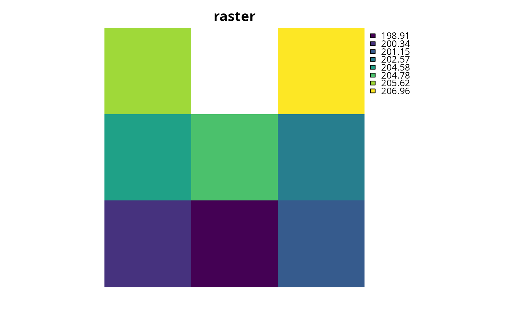
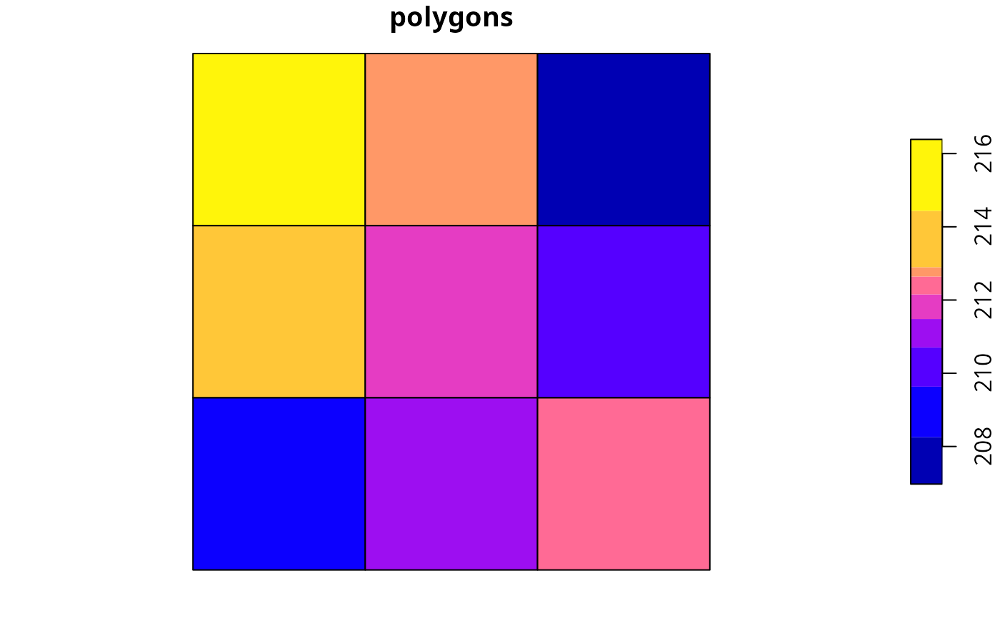
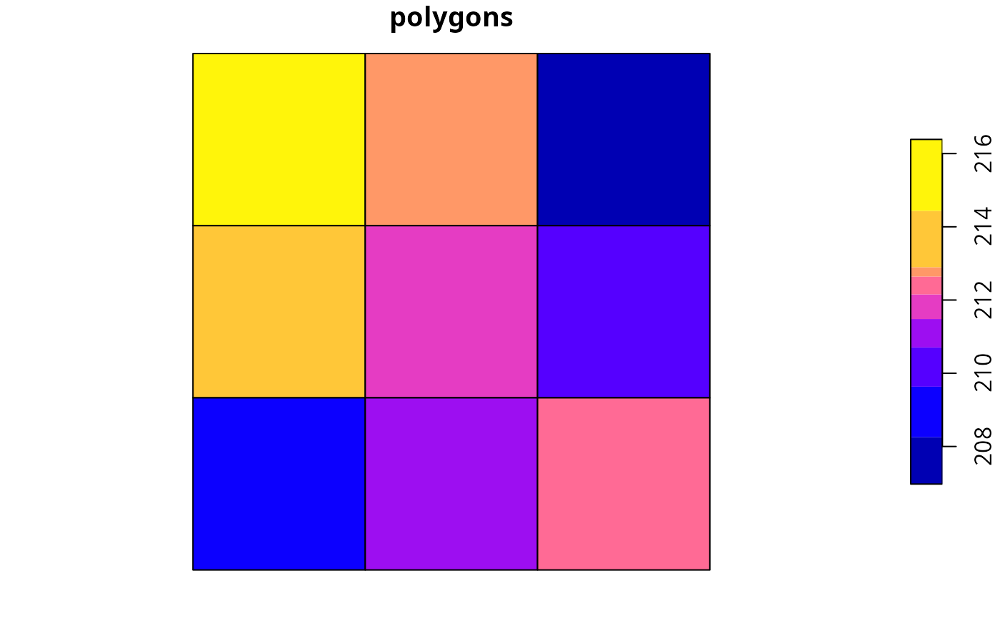

Create a matrix showing which planning units are spatially adjacent to each other.
adjacency_matrix(x, ...)
# S3 method for Raster
adjacency_matrix(x, directions = 4, ...)
# S3 method for SpatRaster
adjacency_matrix(x, directions = 4, ...)
# S3 method for SpatialPolygons
adjacency_matrix(x, ...)
# S3 method for SpatialLines
adjacency_matrix(x, ...)
# S3 method for SpatialPoints
adjacency_matrix(x, ...)
# S3 method for sf
adjacency_matrix(x, ...)
# S3 method for default
adjacency_matrix(x, ...)Arguments
- x
terra::rast()orsf::sf()object representing planning units.- ...
not used.
- directions
integerIfxis aterra::rast()object, the number of directions in which cells should be considered adjacent: 4 (rook's case), 8 (queen's case), 16 (knight and one-cell queen moves), or "bishop" to for cells with one-cell diagonal moves.
Value
A dsCMatrix sparse symmetric matrix.
Each row and column represents a planning unit.
Cells values indicate if different planning units are
adjacent to each other or not (using ones and zeros).
To reduce computational burden, cells among the matrix diagonal are
set to zero. Furthermore, if the argument to x is a
terra::rast() object, then cells with NA values are set to
zero too.
Details
Spatial processing is completed using
sf::st_intersects() for sf::sf() objects,
and terra::adjacent() for terra::rast() objects.
Note that spatially overlapping planning units are considered
adjacent.
Notes
In earlier versions (< 5.0.0), this function was named as the
connected_matrix function. It has been renamed to be consistent
with other spatial association matrix functions.
Examples
# \dontrun{
# load data
sim_pu_raster <- get_sim_pu_raster()
sim_pu_polygons <- get_sim_pu_polygons()
# create adjacency matrix using raster data
## crop raster to 9 cells
r <- terra::crop(sim_pu_raster, terra::ext(c(0, 0.3, 0, 0.3)))
## make adjacency matrix
am_raster <- adjacency_matrix(r)
# create adjacency matrix using polygon data
## subset 9 polygons
ply <- sim_pu_polygons[c(1:3, 11:13, 20:22), ]
## make adjacency matrix
am_ply <- adjacency_matrix(ply)
# plot data and the adjacency matrices
## plot raster and adjacency matrix
plot(r, main = "raster", axes = FALSE)

Matrix::image(am_raster, main = "adjacency matrix")
 ## plot polygons and adjacency matrix
plot(ply[, 1], main = "polygons")

Matrix::image(am_ply, main = "adjacency matrix")
## plot polygons and adjacency matrix
plot(ply[, 1], main = "polygons")

Matrix::image(am_ply, main = "adjacency matrix")
 # }
# }